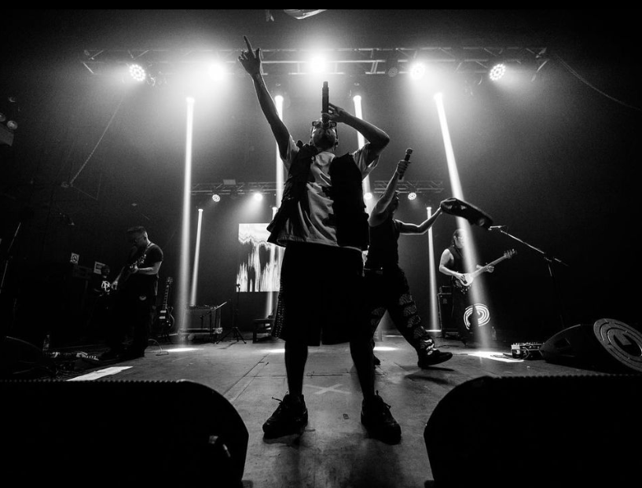

Ezequiel Maida, conocido en el mundo del rap como Kelo, es un visionario de las rimas cuya lírica es un viaje desde las calles hasta las profundidades de la poesía urbana. Sus versos son como pinceladas de la vida cotidiana, retratando realidades complejas con una prosa sin igual. Su música es un eco de las luchas y esperanzas de la calle, pintada con la habilidad de un verdadero maestro de la palabra.